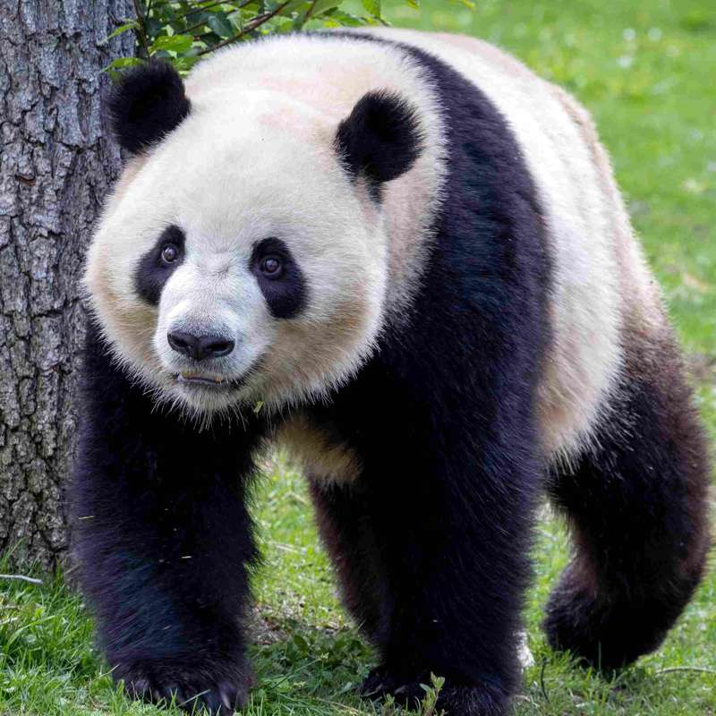

El oso panda es un mamífero de la familia de los osos conocido por su característico pelaje blanco con parches negros alrededor de los ojos, orejas, hombros y patas, con machos que pesan entre 100 y 115 kg y hembras ligeramente más pequeñas. Posee una adaptación única conocida como "falso pulgar", un hueso de la muñeca muy desarrollado que le permite agarrar y pelar los tallos con gran destreza. Aunque su sistema digestivo es el de un carnívoro, su dieta es casi exclusivamente herbívora, ya que el 99% de su alimentación consiste en bambú, del cual debe consumir entre 12 y 38 kg diarios para cubrir sus necesidades energéticas. Debido al bajo valor nutricional de esta planta, es un animal de movimientos lentos y temperamento pacífico que pasa hasta 14 horas al día comiendo y el resto del tiempo descansando. Es una especie solitaria y territorial que no hiberna a diferencia de otros osos, y su hábitat natural se limita a los fríos y neblinosos bosques de bambú en las zonas montañosas del centro de China.